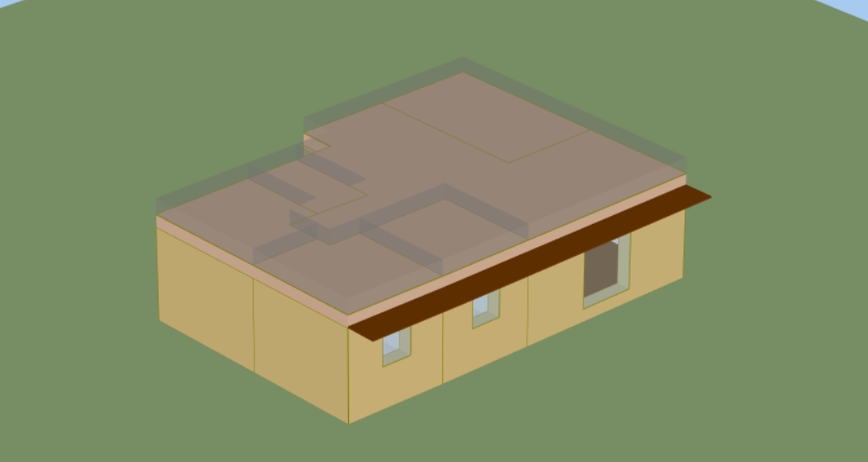
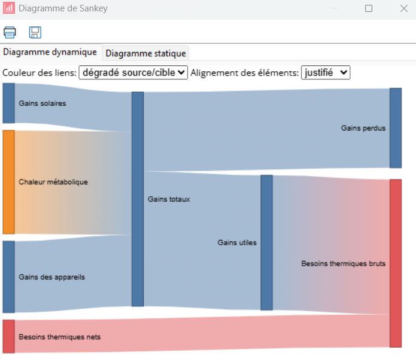

Building energy modelling · Pléiades
Dynamic thermal simulation (Pléiades) of a 70.5 m² detached house.
Dynamic thermal simulation (DTS) of a 70.5 m² house in Trappes (Île-de-France), aimed at cutting space-heating demand and summer overheating hours while accounting for realistic occupancy schedules.

Why this study?
Optimising thermal comfort under realistic occupancy patterns
The project required iteratively refining a baseline house model to keep space-heating demand below 15 kWh/m²·yr, eliminate winter cold discomfort, and cap summer overheating at fewer than 10 occupied hours.
Situated under Trappes climate data, the simulation evaluates how envelope properties, thermostat setpoints, and user schedules jointly drive annual energy performance.
Methodology
Refining envelope assemblies, internal gains, and passive cooling
Using Pléiades, I configured wall/roof assemblies, internal heat gains, occupancy and lighting schedules, ventilation airflows, and solar shading, tracking heating loads and psychrometric comfort hours on a Givoni chart.
- Diagnosed root causes of summer overheating and discomfort during occupied hours.
- Adjusted solar shading schedules and implemented night-purge free ventilation.
- Evaluated architectural overhangs and refined heating/cooling thermostat setpoints.
- Benchmarked annual heating loads and comfort hours before and after model upgrades.
Pléiades simulation results
All performance targets met under the refined operating scenarios
For the 70.5 m² primary living zone, ideal space-heating demand drops to 440.8 kWh/yr (6.3 kWh/m²·yr). On the Givoni psychrometric chart, 4,023 out of 4,030 occupied hours (99.8%) fall within the thermal comfort zone.
These outputs reflect the simulated design case incorporating summer shutter schedules, night-purge ventilation, solar overhangs, and calibrated setpoints.

Deliverables
Deliverables include the Pléiades project file, occupancy/control scenarios, and energy and comfort output reports. A summary package is available on request.
Request visuals via email